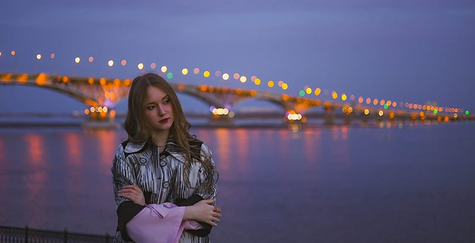

Без масок
Помогаю расслабиться и забыть про камеру. Настоящие эмоции важнее идеальной позы.
Фотограф · Казань
Портрет, семья, творчество и друзья. Живые кадры про чувства, свет и вас настоящих.

Портрет · живой взгляд
01 О съёмке
PhotoСейф - фотограф в Казани. Снимаю портреты, семейные и творческие истории.
Мне важно не просто сделать красивый кадр, а поймать состояние, в котором человек настоящий: смеётся, молчит, смотрит в сторону или просто выдыхает.
На съёмке не нужно играть роль. Достаточно быть собой - остальное соберём вместе.
Помогаю расслабиться и забыть про камеру. Настоящие эмоции важнее идеальной позы.
Ищу свет, в котором вы раскрываетесь: тёплый вечер, мягкое окно, яркая студия.
Кадры, которые хочется пересматривать: для себя, семьи, соцсетей и проектов.

Казань. Город,
в котором у каждой истории
есть свой свет.
02 Портрет
Уникальная красота - в случайном повороте головы, в живом взгляде, в каждой линии тела и глубине души. Когда ты в контакте с собой, это невозможно не заметить: рождается та самая энергия, от которой мурашки.
Создать личную фотоисториюМужской портрет
Сила взгляда, спокойная уверенность, харизма, движение, в котором чувствуется энергия. У меня на съёмке только живой процесс, комфортная атмосфера и сильные кадры, которые работают на тебя: в соцсетях, в проектах и просто для себя.
03 Семья
Спустя годы вы не вспомните, во что были одеты. Но вы точно вспомните, как сильно любили.
Я снимаю семейные и детские истории про самое главное: про живые чувства, нежность, смех до слёз и тепло ваших рук.
Хочу фотосессию04 Творчество
Съёмка как искусство - пространство, где реальность подстраивается под желания твоей души.
Это способ вырваться из рутины и увидеть себя по-новому: глубже, ярче, как героя любимого кино или ожившей картины. Никаких рамок и шаблонов - только свобода, радость эксперимента и кадры с особой магией, от которых невозможно оторвать взгляд.
Хочу творить05 Проекты
Видеть глубже. Чувствовать шире. Разрешать себе играть, искать новые смыслы и просто кайфовать от того, как мир оживает в моём объективе.
Создать вместеСерия 01
Серия о футболе, азарте и мечте, которой не суждено было сбыться.
Серия 02
Тихая осень в деталях: свет в листве, забытые вещи, окна и дворы.
Серия 03
Театр, маски и чувства, которые остаются за кулисами.
06 Друзья
Самая настоящая магия рождается, когда рядом свои. Собирайтесь вместе, чтобы создавать красоту и сохранять моменты, которые согреют душу спустя годы.
Забронировать дату07 Контакты
Напишите, какую съёмку хотите: портрет, семейную, творческую или дружескую. Подберём место, свет и настроение.
Съёмки в Казани и за городом. Выезд в другие города - по договорённости.